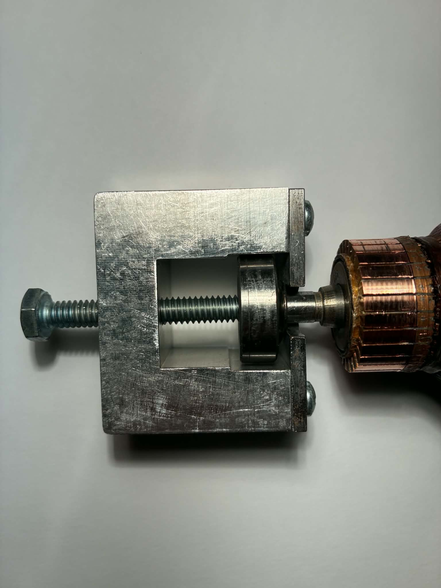
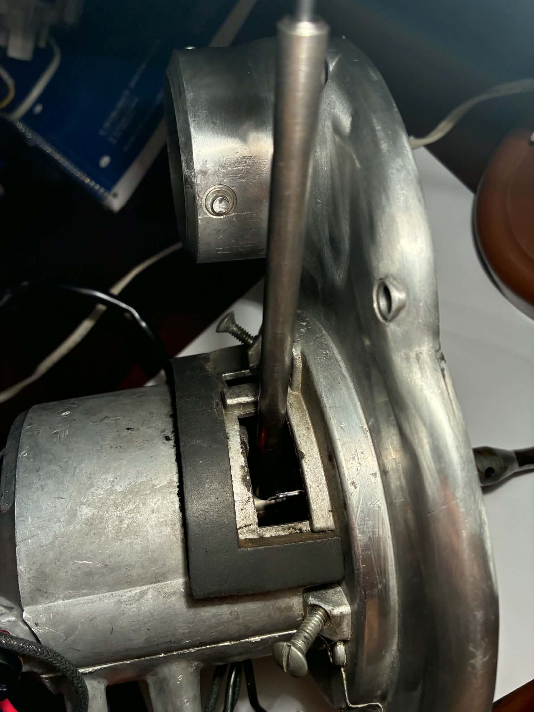
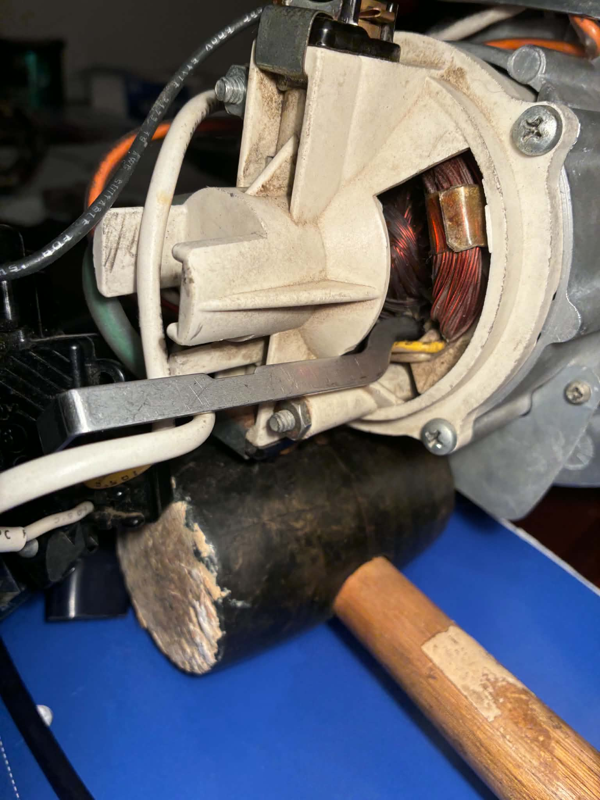
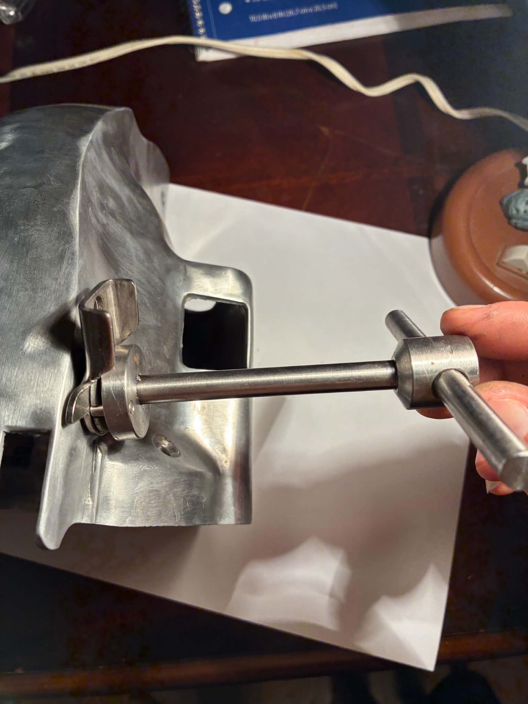

Kirby Parts & Tools
Free, make-your-own 3D models of vintage Kirby factory service tools, plus a
replacement parts cross-reference for all models.
← Back to main page
Service Tools
Free, make-your-own 3D models of vintage Kirby factory service tools - every one reproducible at home from standard bar, rod, or flat stock with a lathe and a saw (no castings, no welds). Click a preview to explore it in 3D, or grab the CAD files to print or machine your own.
Jump to: T127 · T104 · T130 · T124 · T123
T127 — Armature Bearing Press
A portal-frame (“arch”) press for the motor's rear shaft bearing. The armature shaft seats in the U-slot of the base plate; turning the 1/4-20 pusher bolt drives the bearing squarely off. Milled from flat stock and an aluminum block, with four screws holding the base plate to the arch - no castings, no welds.
NOTE: the T127 presses a bearing off the armature shaft; to press one back on, a 5/16" socket makes a perfect driver - its lip matches the bearing’s inner race (so you drive the race, never the balls) and its bore clears the few mm of shaft that pokes through. Chill the shaft end in dry ice, slip the bearing on by hand while it’s shrunk, then tap it home with a rubber mallet on the socket until fully seated.

T104 — Armature Lock (early)
A double-ended lock pin. Push either tip through the motor armature shaft’s cross-hole to stop it from turning while you break loose the fan - either end works. Used on Models 505 through 1CR, for newer models, use T130. Turned from 8 mm rod, with a 3 mm dowel-pin tip pressed into each drilled end.

T130 — Armature Lock (sheet steel)
A folded flat-stock armature lock, used on 1CB - Legend II (older models use T104). Its flat blade slides into the armature’s core laminations – between the field windings, not into the commutator (as the grainy reference photos make it look) – while the upturned tab at the far end catches the motor housing, so torque on the fan or brushroll locks against the case instead of turning the armature. A trapezoidal notch indexes it into position; the handle sticks out the back of the motor. Cut from 1 mm flat-stock steel (laser or by hand), folded along the bend lines.

T124 — Handle-Spring Winder (early)
The earlier counterpart to T123, for the pre-516 handle spring used on Models 505 through 515. It does the same job – winding the handle spring against itself to set tension – but where T123 is a T-handle spanner, T124 is an unusual two-piece design. It’s the rarest tool in the set; a model is in the works so anyone can reproduce one.
T123 — Handle-Spring Winder
A T-handle torque spanner for setting handle-spring tension. For models 516 - Legend II, earlier models use T124.The dark tang under the disc engages the slot in the handle-spring shaft, letting you wind the spring against itself; a job that slips and chews up the slot if attempted with pliers. Made from rods, dowel pin, and bar stock, friction-fit assembled with oil-tolerant Loctite 243.

Quick Parts Lookup
Excludes pre-505 and post-Sentria models.
| Model | Bag(s) | Brushroll | Belt | Front Bearing | Rear Bearing | Motor Brushes | Fan | Light Bulb |
|---|---|---|---|---|---|---|---|---|
| 505 | K-190062 | 1482S | K-159056Original Kirby Part №: 1590S | 87500Original Kirby Part №: A1160 | 87007Original Kirby Part №: A1155 | K-118067 | 1189SOriginally used the 6-blade fan (Kirby Part №: 1188S). | K-1650 |
| 508 | K-190062 | 1482S | K-159056Original Kirby Part №: 1590S | 87500 | 87007 | K-118067 | 1189SOriginally used the 6-blade fan (Kirby Part №: 1188S). | K-1650 |
| 510 | K-190062 | 1482S | K-159056Original Kirby Part №: 1590S | 87500 | 87007 | K-118067 | 1189SOriginally used the 6-blade fan (Kirby Part №: 1188S). | K-1650 |
| 511 | K-190062 | 1482S | K-159056Original Kirby Part №: 1590S | 87500 | 87007 | K-118067 | 1189SOriginally used the 6-blade fan (Kirby Part №: 1188S). | K-1650 |
| 512 | K-190062 | 1482S | K-159056Original Kirby Part №: 1590S | 87500 | 87007 | K-118067 | 1189SOriginally used the 6-blade fan (Kirby Part №: 1188S). | K-1650 |
| 513 | K-190062 | K-1525 | K-159056Original Kirby Part №: 1590S | 87500 | 87007 | K-118067 | 1189SOriginally used the 6-blade fan (Kirby Part №: 1188S). | K-1650 |
| 514 | K-190062 | K-1525 | K-159056Original Kirby Part №: 1590S | 87500 | 87007 | K-118067 | 1189SOriginally used the 6-blade fan (Kirby Part №: 1188S). | K-1650 |
| 515 | K-190062 | K-1525 | K-159056Original Kirby Part №: 1590S | 87500 | 87007 | K-118067 | 1189S | K-1650 |
| 516 | K-190062 | K-1525 | K-159056Original Kirby Part №: 1590S | 87500 | 87007 | K-118067 | K-119078Originally used the now-obsolete metal fan blade (Kirby Part №: A119056). | K-1650 |
| 517 | K-190062 | K-1525 | K-159056Original Kirby Part №: 1590S | 87500 | 87007 | K-118067 | K-119078Originally used the now-obsolete metal fan blade (Kirby Part №: A119056). | K-1650 |
| 518 | K-190062 | K-1525 | K-159056Original Kirby Part №: 1590S | 87500 | 87007 | K-118067 | K-119078Originally used the now-obsolete metal fan blade (Kirby Part №: A119056). | K-1650 |
| 519 | K-190062 | K-1525 | K-159056Original Kirby Part №: 1590S | 87500 | 87007 | K-118067 | K-119078Originally used the now-obsolete metal fan blade (Kirby Part №: A119056). | K-1650 |
| 560 | K-190062 | K-1525 | K-159056Original Kirby Part №: 1590S | 87500 | 87007 | K-118067 | K-119078Originally used the now-obsolete metal fan blade (Kirby Part №: A119056). | K-1650 |
| 561 | K-190062 | K-1525 | K-159056Original Kirby Part №: 1590S | 87500 | 87007 | K-118067 | K-119078Originally used the now-obsolete metal fan blade (Kirby Part №: A119056). | K-1650 |
| 562 | K-190062 | K-1525 | K-159056Original Kirby Part №: 1590S | 87500 | 87007 | K-118067 | K-119078Originally used the now-obsolete metal fan blade (Kirby Part №: A119056). | K-1650 |
| San. VII | K-190062 | K-1525 | K-159056Original Kirby Part №: 1590S | 87500 | 87007 | K-118067 | K-119078Originally used the now-obsolete metal fan blade (Kirby Part №: A119056). | K-1650 |
| DS50 | K-190065 | K-1525 | K-159056Original Kirby Part №: 1590S | 87500 | 87007 | K-118067 | K-119078Originally used the now-obsolete metal fan blade (Kirby Part №: A119056). | K-1650 |
| DS80 | K-190067 | K-1525 | K-159056Original Kirby Part №: 1590S | 87500 | 87007 | K-118067 | K-119078Originally used the now-obsolete metal fan blade (Kirby Part №: A119056). | K-1650 |
| 1CR | K-190073 | K-152575 | K-159056 | 87500 | 87007 | K-118076 | K-119078Originally used the now-obsolete metal fan blade (Kirby Part №: A119056). | K-1650 |
| 1-CB | K-190073 | K-152575 | K-159056 | 6200Original Kirby Part №: K-116073 | 608Original Kirby Part №: K-115573 | K-118076 | K-119078Originally used the now-obsolete metal fan blade (Kirby Part №: A119056). | K-109273 |
| 2-CB | K-190077 | K-152575 | K-159056 | 6200 | 608 | K-118076 | K-119078Originally used the now-obsolete metal fan blade (Kirby Part №: A119056). | K-109273 |
| 3-CB | K-19067903 | K-152575 | K-159056 | 6200 | 608 | K-118076 | K-119078 | K-109273 |
| 1-HD | K-19068103 | K-152581 | K-159056 | 6200 | 608 | K-118076 | K-119078 | K-109273 |
| 2-HD | K-197289 | K-151584Contains magnet for Brush Performance Indicator. | K-159056 | 6200 | 608 | K-118076 | K-119078 | K-109273 |
| G3 | K-197294 | K-156293 | K-301291 | 6200 | 608 | K-107189 | K-119092Also accepts the earlier K-119078 fan blade. | K-109289 |
| G4 | K-197294 | K-156293 | K-301291 | 6200 | 608 | K-107189 | K-119092Also accepts the earlier K-119078 fan blade. | K-109289 |
| G5 | K-197294 | K-152502 | K-301291 | 6200 | 608 | K-107189 | K-119096 | K-109289 |
| G6 | K-204814 | K-152502 | K-301291 | 6200 | 608 | K-107189 | K-119096 | K-109289 |
| Ult. G | K-204814 | K-152502 | K-301291 | 6200 | 608 | K-107189 | K-119096 | K-109289 |
| DE | K-204814 | K-152505 | K-301291 | 6200 | 608 | K-107189 | K-119096 | K-109289 |
| Sentria | K-204814 | K-152505 | K-301291 | 6200 | 608 | K-107189 | K-119096 | K-164306 |
- 1482S (505–512 brushroll) — still sold under its original number; it was never renumbered into the modern K- series.
- K-151584 (2HD brushroll) — dimensionally identical to the 1HD roll (K-152581), but adds a magnet for the Brush Performance Indicator light on late Heritage II / Legend I models; the magnet is the only reason it carries a different number.
- K-190062 (505 – San. VII bag) — the current generic replacement bag. Kirby consolidated the original per-model 5xx–VII bags into one SKU rather than reissue each, so these models all share one bag today (DS50 onward kept distinct numbers).
- Bag column lists OEM 3-pack part numbers; the 3CB (K-19067903) and 1HD (K-19068103) numbers are genuinely unique. Tradition — Legend II also accept generic Style 1 / 2 / 3 bags (see the filter-type table above), so the model-specific SKU isn't the only option.